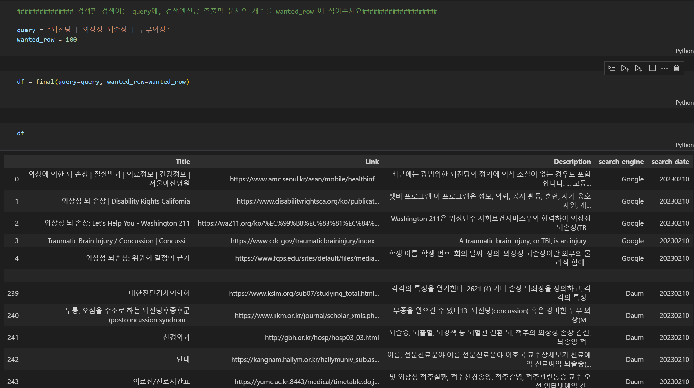

import requests
Google_SEARCH_ENGINE_ID = "" # Search Engine ID
Google_API_KEY = "" # Custom Search Engine API KEY
query = "" # 검색할 쿼리
start_page = "" # 몇 페이지를 검색할 것인지. 한 페이지 당 10개의 게시물을 받아들일 수 있습니다.
url = f"https://www.googleapis.com/customsearch/v1?key={Google_API_KEY}&cx={Google_SEARCH_ENGINE_ID}&q={query}&start={start_page}"
response = requests.get(url).json()1 Task의 목적

이번 태스크의 목적은 바로 구글, 네이버, 다음 API를 모두 이용하여 검색결과를 DB화 시키는 작업입니다.
사용자로 부터 query와 크롤링 원하는 검색 글 수를 인풋으로 입력받아서, API로 부터 제공받은 데이터를 가공하여 새로운 데이터프레임으로 만드는 작업을 수행합니다. 데이터 프레임의 컬럼은
[Title] - 글 제목, [Link] - 글 링크 , [Description] - 글 미리보기 내용, [Search engine] - 검색결과를 제공한 포털 (naver,google,daumkakao), [search_date] -글을 검색한 날짜
입니다.
전체 JupyterNoteBook Source Code
https://github.com/zarathucorp/blog/blob/master/source_code/Custom_Search_Zarathu.ipynb

1.1 왜 크롤링을 하지 않았는지
흔히 동적 크롤러로 Selenium을 많이 활용합니다. 하지만 이런 크롤링에는 기업의 자산인 데이터 자산을 침해한다는 문제점이 있습니다. 이와 관련하여 부동산 정보 플랫폼 직방의 데이터를 크롤링한 경위로 스타트업 방픽은 소송에서 얻은 데이터를 폐기하고, 직방에 2000만원을 지급하도록 2월 3일에 판결을 내려졌습니다. 따라서 홈페이지를 통해 정보가 공개됐다고 하더라도, 이런 타 사이트에 대한 데이터 베이스를 수집하는 행위는 위험하다고 생각합니다. 따라서 크롤링을 해야한다면 해도 되는지 확인을 하고 하거나, 개발자를 위한 도구로 제공된 API가 먼저 있는지 없는지 검토를 하는 것이 안전해 보입니다. (특히 얻은 데이터로 수익을 창출하는 경우는 더 더욱)

1.2 API란?
API란 무엇인지 위키백과의 설명을 통하면, “API(application programming interface 애플리케이션 프로그래밍 인터페이스[*], 응용 프로그램 프로그래밍 인터페이스)는 컴퓨터나 컴퓨터 프로그램 사이의 연결이다. 일종의 소프트웨어 인터페이스이며 다른 종류의 소프트웨어에 서비스를 제공한다”라고 설명하고 있습니다. 즉 컴퓨터끼리 연결하고 소통하는 방식인데, 주로 우리가 API를 연결해서 쓸 때는 클라이언트와 서버를 연결하여 원하는 요청을 처리하는 것이 보통입니다. 오늘 이 글에서 사용할 API는 REST API라고 합니다. API와 구별되는 REST API의 특징으로는 API를 이용할 때 규칙이 정해져 있다는 특징이 있습니다.
URL을 통해 소통할 방법을 서버와 클라이언트 사이에 주고 받는다. 그때 어떤 자원에 대해 어떤 행위를 요청받을지 URL에 명시를 해주는 것이 원칙입니다.
- GET : 리소스 생성
- POST: 조회
- PUT : 수정
- DELETE: 삭제
등이 있고, 서버는 요청에 대해 상태코드로 응답합니다
상태코드에 따라 정상과 비정상적으로 처리했는지 response 개체를 받아옵니다.
- 200: 정상
- 400: 비정상

2 구글 API 사용법
API를 통해 서버로 부터 응답을 받기 위해선 api key가 필요합니다. 구글에서는 검색한 내용을 반환시켜주는 API로 custom_search_engine cse를 사용해서 검색 결과를 가져올 수 있습니다. (일일 100개의 쿼리제한이 걸려있습니다.)
구글 API 키 발급받는 방법은 아래 링크를 참조하세요
구글 CSE 공식문서를 참고하여 작성하였습니다.
https://developers.google.com/custom-search/v1/using_rest?hl=ko
예시코드로
GET https://www.googleapis.com/customsearch/v1?key=INSERT_YOUR_API_KEY&cx=017576662512468239146:omuauf_lfve&q=lectures이런 코드가 적혀있는 것을 알 수 있습니다. 이것은 터미널에서 리눅스 명령어로 앞에 curl을 호출해서 url로 부터 응답을 받아오는 코드를 의미합니다
자세히 보시면 중간에 key=INSERT_YOUR_API_KEY로 발급받은 키가 들어가는 자리이고, cx= google_search_engine의 id값이 들어갑니다. 또 &q= query로 검색할 검색어를 입력하는 것을 알 수 있습니다.
이외에도 request 요청을 할 때 다양한 인자들을 줄 수 있습니다.
더욱 자세한 인자들을 모두 소개하는 것은 한계가 있으니 링크를 통하여 https://developers.google.com/custom-search/v1/reference/rest/v1/cse/list?hl=ko&apix_params=%7B%22cx%22%3A%22sadasda%22%2C%22q%22%3A%22react%22%2C%22start%22%3A1%7D 확인하시기 바랍니다.
파이썬에서는 curl이라는 명령어가 없습니다. 따라서 우리는 url에 대한 응답을 요청하고 받아오기 위해서 python의 패키지인 urllib와 requests를 활용해야합니다.
curl에 대한 명렁어는 파이썬에서 requests 패키지와 urllib을 통해서 요청할 수 있습니다.
요청을 보내는 코드는 아래와 같습니다.
이렇게 요청하는 url을 우리는 작성하면 얻는 response를 한번 확인해 보겠습니다.
https://developers.google.com/custom-search/v1/reference/rest/v1/Search?hl=ko 응답에 대한 양식에 대한 링크이며 응답을 테스트 해볼 수 있습니다.
이때 우리는 응답에 대해서 response 객체로 JSON 형식의 데이터를 반환하는 것을 알 수 있습니다. JSON 형식의 데이터는 key-value로 이루어진 딕셔너리 형태의 데이터 타입으로, value 값을 얻기 위해 get 메서드를 많이 사용합니다.
이렇게 서버로 부터 응답해온 결과 중 우리가 원하는 정보를 추출해서, 데이터프레임에 담아내는 것이 목적입니다. response 객체 중, items의 키값을 통해 요청한 결과물들이 담겨 있는 것을 확인했습니다.

2.1 구글 크롤링 코드 전체
응답받은 response 이 코드에선 data로 변수명을 저장했습니다. 이 객체에 접근해서 우리의 목표에 맞게 데이터에 접근해서 한 줄 한 줄 데이터 프레임에 입력하여 저장하는 작업을 하겠습니다.
2.1.1 url에 내용의 신뢰도가 낮은 사이트의 검색결과는 저장하지 않도록 예외처리를 합니다. (선택사항)
Trash_Link = ["tistory", "kin", "youtube", "blog", "book", "news", "dcinside", "fmkorea", "ruliweb", "theqoo", "clien", "mlbpark", "instiz", "todayhumor"] url 링크에, 티스토리, 지식인,유튜브, 블로그,책,뉴스,디시인사이드,에펨코리아,루리엡,더쿠,클리앙,엠엘비파크,인스티즈,오늘의유머의 검색결과는 제거하도록 했습니다.
def Google_API(query, wanted_row):
"""
input :
query : str 검색하고 싶은 검색어
wanted_row : str 검색 결과를 몇 행 저장할 것인지
output :
df_google : dataframe / column = title, link,description
사용자로 부터 입력받은 쿼리문을 통해 나온 검색 결과를 wanted_row만큼 (100행을 입력받았으면) 100행이 저장된 데이터 프레임을 return합니다.
"""
query= query.replace("|","OR") #쿼리에서 입력받은 | 기호를 OR 로 바꿉니다
query += "-filetype:pdf" # 검색식을 사용하여 file type이 pdf가 아닌 것을 제외시켰습니다
start_pages=[] # start_pages 라는 리스트를 생성합니다.
df_google= pd.DataFrame(columns=['Title','Link','Description']) # df_Google이라는 데이터 프레임에 컬럼명은 Title, Link, Description으로 설정했습니다.
row_count =0 # dataframe에 정보가 입력되는 것을 카운트 하기 위해 만든 변수입니다.
for i in range(1,wanted_row+1000,10):
start_pages.append(i) #구글 api는 1페이지당 10개의 결과물을 보여줘서 1,11,21순으로 로드한 페이지를 리스트에 담았습니다.
for start_page in start_pages:
# 1페이지, 11페이지,21페이지 마다,
url = f"https://www.googleapis.com/customsearch/v1?key={Google_API_KEY}&cx={Google_SEARCH_ENGINE_ID}&q={query}&start={start_page}"
# 요청할 URL에 사용자 정보인 API key, CSE ID를 저장합니다.
data = requests.get(url).json()
# request를 requests 라이브러리를 통해서 요청하고, 결과를 json을 호출하여 데이터에 담습니다.
search_items = data.get("items")
# data의 하위에 items키로 저장돼있는 값을 불러옵니다.
# search_items엔 검색결과 [1~ 10]개의 아이템들이 담겨있다. start_page = 11 ~ [11~20]
try:
#try 구문을 하는 이유: 검색 결과가 null인 경우 link를 가져올 수가 없어서 없으면 없는대로 예외처리
for i, search_item in enumerate(search_items, start=1):
# link 가져오기
link = search_item.get("link")
if any(trash in link for trash in Trash_Link):
# 링크에 dcinside, News 등을 포함하고 있으면 데이터를 데이터프레임에 담지 않고, 다음 검색결과로
pass
else:
# 제목저장
title = search_item.get("title")
# 설명 저장
descripiton = search_item.get("snippet")
# df_google에 한줄한줄 append
df_google.loc[start_page + i] = [title,link,descripiton]
# 저장하면 행 갯수 카운트
row_count+=1
if (row_count >= wanted_row) or (row_count == 300) :
#원하는 갯수만큼 저장끝나면
return df_google
except:
# 더 이상 검색결과가 없으면 df_google 리턴 후 종료
return df_google
return df_googlelink를 입력 받을 때 try except구문을 활용하여 예외처리를 하였습니다.이를 자세히 설명하게 되면, 특정 키워드로 검색했을 때 나오는 검색결과가 충분하지 않는 경우 response객체에 items 값이 null이 되게 됩니다. 따라서 이후의 작업들이 문제가 생기게 되는데, 이를 try except 구문을 통해 처리했습니다.
3 네이버 검색 API 사용법
네이버 API 키를 발급받는 방법은 아래를 참고하세요.
일 허용 한도 25000건을 제공합니다 더 많은 요청을 보내기 위해선 제휴를 신청해야합니다.
네이버 웹문서 검색 API 공식문서
https://developers.naver.com/docs/serviceapi/search/web/web.md#%EC%9B%B9%EB%AC%B8%EC%84%9C
3.1 네이버 크롤링 코드
# Naver_client_id = '~~~~' # 발급받은 ID를 입력해주세요
# Naver_client_secret = '~~~'
def Naver_API(query,wanted_row):
query = urllib.parse.quote(query)
display=100
#네이버 검색 API는 한 페이지를 요청했을 때 몇개의 건수를 보여줄 것인지 인자로 표시할 수 있습니다.
start=1
# start page를 1로 설정합니다.
end=wanted_row+10000
# 끝내는 페이지를 원하는 행의 갯수보다 더 많이 설정했는데 이유는 , trashlink 보다 많은 데이터를 저장합니다.
sort='sim'
# 네이버 API 검색 결과는 검색결과 데이터를 정렬하는 순서의 기준을 정합니다.
df= pd.DataFrame(columns=['Title','Link','Description'])
# 마찬가지로 title,link,description의 컬럼을 가진 데이터프레임을 생성합니다.
row_count= 0
# dataframe에 정보가 입력되는 것을 카운트 하기 위해 만든 변수입니다.
for start_index in range(start,end,display):
url = "https://openapi.naver.com/v1/search/webkr?query="+ query +\
"&display=" + str(display)+ \
"&start=" + str(start_index) + \
"&sort=" + sort
#url에 요청할 정보에 대한 내용을 담아 변수 선언하고,
request = urllib.request.Request(url)
#urllib.request 모듈을 통해 요청을만들고,
request.add_header("X-Naver-Client-Id",Naver_client_id)
request.add_header("X-Naver-Client-Secret",Naver_client_secret)
# 그 요청에 헤더를 만들어서 클라이언트 아이디와, 비밀번호를 헤더에 입력합니다.
try:
response = urllib.request.urlopen(request)
# 요청하여 받은 내용을 response로 저장합니다.
rescode = response.getcode()
# response 객체에 담긴 응답 코드를 받아옵니다
if(rescode==200):
response_body = response.read()
# response 내용을 읽어들여 response_body에 저장합니다.
items= json.loads(response_body.decode('utf-8'))['items']
# 전체 response를 json화 한 뒤 key값이 items로 되어있는 값에 저장을 합니다.
remove_tag = re.compile('<.*?>')
# html문법의 태그들을 제거하는 컴파일러를 정규식을 패키지를 통해 생성합니다.
for item_index in range(0,len(items)):
link = items[item_index]['link']
# 아이템에 링크에 접근합니다
if any(trash in link for trash in Trash_Link):
# link url에 출처가 신뢰도가 낮은 사이트의 정보라면 데이터프레임에 저장하지 않고 넘어갑니다.
pass
else:
title = re.sub(remove_tag, '', items[item_index]['title'])
description = re.sub(remove_tag, '', items[item_index]['description'])
# html 태그를 제거한 후, 제목 설명,링크 저장
df.loc[row_count] =[title,link,description]
row_count+=1
if (row_count >= wanted_row) or (row_count == 300):
return df
except:
return df큰 흐름은 구글에서 작성한 코드와 유사합니다.
먼저 네이버 클라이언트 ID와 KEY값을 변수로 넣어줍니다. 경우에 따라 자기 혼자 쓰는 건 상관없겠지만 , 보통 키를 저렇게 코드에 보이게 노출하는 것 보다는 INPUT을 통해 보이지 않게 입력하는 것이 좋을 것 같습니다. 그리고 구글에서는 URL에 서비스 요청할 정보와 요청자의 신원을 확인할 수 있는 정보들을 모두 입력했습니다. 네이버에서는 조금 다르게 URL에 넣는 인자로는 어떤 검색결과를 받을지 표시하고, 몇 건이 출력될지 등 파라미터를 줘서 코드를 작성할 수 있습니다. 또 URL에 통해 사용자를 키값 정보를 같이 담지 않고 요청에 헤더를 추가하여 그곳에 담아 요청합니다.
이후는 이전과 동일하게 네이버 웹문서 검색 API가 제공하는 JSON 데이터 형식을 보고 필요한 키-밸류값에 접근하여 데이터를 수집한 뒤 데이터프레임을 반환합니다.
구글에서는 요청에 대한 응답(response) items에 데이터가 불용어와 html문법의 태그로 돼있는 것들이 나와있지 않았지만, 네이버에서 보낸 응답에는 불용어가 많이 섞여있어서 그것을 제거하기 위해 re 패키지의 정규식을 이용하여 글자만 남기도록 했습니다.
4 다음 검색 API 사용법
카카오 API 키 발급받는 방법은 해당 링크름 참조하세요
다음 검색 API 공식문서
https://developers.kakao.com/docs/latest/ko/daum-search/dev-guide
4.1 다음 API 활용 파이썬 코드
# Kakao_API_key = '~~~~' # 발급받은 api키를 입력해주세요
def Daum_API(query,wanted_row):
pages= wanted_row//10
# 검색해야할 페이지를 10으로 나눈 몫으로 구합니다
# 예: 100 행 검색이면 10페이지
method = "GET"
url = "https://dapi.kakao.com/v2/search/web"
header = {'authorization': f'KakaoAK {Kakao_API_key}'}
# 다음 카카오 API를 호출할 때는, header 딕셔너리로 생성하여 정해진 형식으로 API키를 넘겨줘야합니다. 형식은 위와 같습니다.
df= pd.DataFrame(columns=['Title','Link','Description'])
#데이터프레임을 생성합니다
row_count=0
# row_count 변수를 생성합니다
for page in range(1,pages+10):
#여유있게 10페이지더 검색합니다 이유는 Link가 버려지는 경우를 위해서입니다.
params = {'query' : query, 'page' : page}
# 다른 API 호출방식과 달리 url string에 담아서 넘겨주는 형식이 아니라, 딕셔너리형태로
# params와 header에 담아서 리퀘스트를 요청합니다.
request = requests.get( url, params= params, headers=header)
#요청한 내용을 받은 것을 request에 저장합니다. 변수명 request이지만 사실은 response
for i, item in enumerate(request.json()["documents"], start=1):
#아이템 객체에서 url을 받아옵니다.
link = item['url']
try:
# date time이 null인 경우가 많아서 예외처리를 해서 경우를 나눴습니다. 앞의 4글자 년도 YYYY를 저장합니다.
written_year=int(item['datetime'][:4])
except:
# 작성일자가 null인 경우, 2023년으로 저장합니다.
written_year = 2023
if (any(trash in link for trash in Trash_Link) or (written_year <2020)):
# 출처가 신뢰도가 낮은 사이트거나, 작성된지 오래된 글의 경우
pass
else:
title= item["title"]
description = item["contents"]
df.loc[10*page+i] =[title,link,description]
#title과 본문 설명을 담아서 데이터프레임에 한줄한줄 append합니다.
row_count+=1
if (row_count >= wanted_row) or (row_count == 300):
# 행수가 원하는 로우만큼 채워지거나, Maximum_row개수인 300에 도달하면
# html태그들을 제거한 후 반환합니다.
remove_tag = re.compile('<.*?>')
df['Title'] =df['Title'].apply(lambda x :re.sub(remove_tag, '',x))
df['Description'] =df['Description'].apply(lambda x :re.sub(remove_tag, '',x))
return df
remove_tag = re.compile('<.*?>')
df['Title'] =df['Title'].apply(lambda x :re.sub(remove_tag, '',x))
df['Description'] =df['Description'].apply(lambda x :re.sub(remove_tag, '',x))
return df 카카오 API는 요청을 하면 보내주는 response 중 우리가 원하는 내용을 구글과 네이버는 items에 내용들이 담겨있었습니다. 카카오 다음검색 api는 보낸 응답에 documents라는 키값에 저장돼있음을 문서를 통해 확인할 수 있습니다. 문서를 통해 확인할 수 있고, 보통 api를 제공하는 사이트에서 테스트해볼 수 있어 입력물과 결과물의 형식을 요청해보지 않아도 확인가능합니다. 조금 다른 점이라면 이번에는 카카오 api에서 담겨있는 내용 중 작성일자를 Document-datetime에 저장돼있어서 검색 기간을 설정할 수 있는 기능을 구현했습니다.
이렇게 나온 결과물에서 한번 더 필터링하는 것도 있을 수 있지만, 애초에 검색식을 이용하여 검색결과로 반환해야할 데이터를 줄일 수 있는데, 기간검색은 검색식으로 제어가 되지 않았습니다.
5 최종 코드
def final(query,wanted_row=100):
df_google = Google_API(query,wanted_row)
df_google['search_engine']='Google'
# 서치엔진 구글을 통해 얻었음을 기록
df_naver = Naver_API(query,wanted_row)
df_naver['search_engine']='Naver'
# 서치엔진 기록
df_daum = Daum_API(query,wanted_row)
df_daum['search_engine']='Daum'
df_final= pd.concat([df_google,df_naver,df_daum])
# 전체 네이버 구글 카카오에서 크롤링한 내용을 수평으로 결합 rowbind
df_final['search_date'] = today
# 검색한 날자 저장
df_final.reset_index(inplace=True,drop=True)
#인덱스 초기화
return df_final
############### 검색할 검색어를 query에, 검색엔진당 추출할 문서의 개수를 wanted_row 에 적어주세요####################
## 아래 코드를 실행시키기 위해선 위의 함수들이 모두 불러와져 있어야 합니다!
# today = datetime.today().strftime("%Y%m%d")
# query = "뇌진탕 | 외상성 뇌손상 | 두부외상"
# wanted_row = 100
# df = final(query=query, wanted_row=wanted_row) #최종함수를 호출하여 dataframe을 받습니다.
# query_filename = re.sub(r"[^\uAC00-\uD7A30-9a-zA-Z\s]", "", query) #저장할때 파일명에는 특수문자 제거
# df.to_csv(f'{query_filename}_{today}.csv',index=False) #파일이름을 지정하여 저장합니다.6 개발 후기
역시 데이터 분석가의 업무 중 가장 시간이 오래걸리는 것은 전처리가 아닐까 싶습니다. 이 API를 호출하는 과정을 통해서 API에 어떻게 요청하고 응답의 형태를 고려해서 원하는 데이터를 저장하기 위해 어떤 코드를 작성해야하는지 알게됐습니다.
저는 컴퓨터공학 비전공자로 먼저 API라는 것이 이름을 들으면 잘 모르는 것이였어서 두려운 마음이 컸었습니다. 하지만 이번에 실제로 사용을해보니, API 기술의 무엇인지와 이것이 왜 필요한지에 대해서 알게 됐고, 어떤 원리로 동작하는지 알 수 있어서 좋았습니다. 하지만 본문의 내용에서 RESTful한 API, API에 대해서 설명이 깊이있지 못하여 조금 아쉬움이 남습니다.
또 이렇게 앞으로 API를 직접 만들일이 생긴다면, FAST API를 통해 만들 수 있다는 것을 알게됐고 추후에 그 쪽에 대해서도 나중에 더 깊게 공부해보고 싶어졌습니다.
그리고 검색API마다 결국 기본적으로 타이틀과 url ,설명들을 제공하고 있어서 검색 API들이 검색 포털 별로 데이터 규격을 쉽게 맞출 수 있어서 좋았습니다. 공식문서를 정독하는 것이 다른 개발의 과정에서도 중요하지만 특히 API를 사용하는데 있어서 가장 중요한 역할을 한다는 것을 느꼈습니다.
모든 소스코드는 차라투 깃허브에 같이 포스팅 해놓았고 아래 링크에서 확인 가능합니다.
Source Code
https://github.com/zarathucorp/blog/blob/master/source_code/Custom_Search_Zarathu.ipynb
Citation
BibTeX citation:
@online{kim2023,
author = {Kim, Won},
title = {Python을 {이용한} {검색포털} {API} {활용}},
date = {2023-02-15},
url = {https://blog.zarathu.com/posts/2023-02-15-searchAPI-with-python},
langid = {en}
}
For attribution, please cite this work as:
Kim, Won. 2023. “Python을 이용한 검색포털 API 활용.”
February 15, 2023. https://blog.zarathu.com/posts/2023-02-15-searchAPI-with-python.